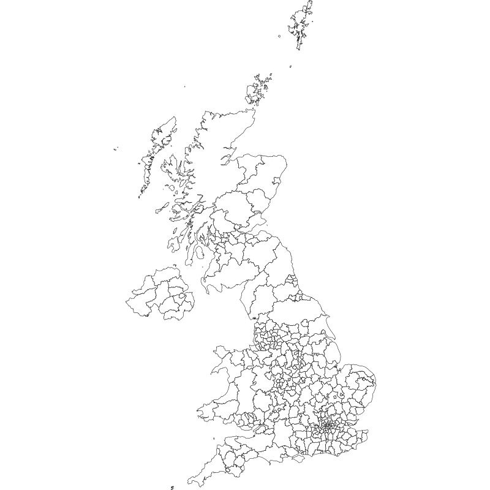

Geospatial Capability
Select options to generate a choropleth map that you can export as XXX format.
Data
Jobseeker's Allowance
Population Estimates
Don’t see the metric / stat you need here?
The list above is a pre-canned selection of the most popular metrics/stats. you can add one not found by pasting the URL to the metric in NOMIS.
URL to data
Year
2022 (most recent)
2021
Generate map
Export map

A4 preview